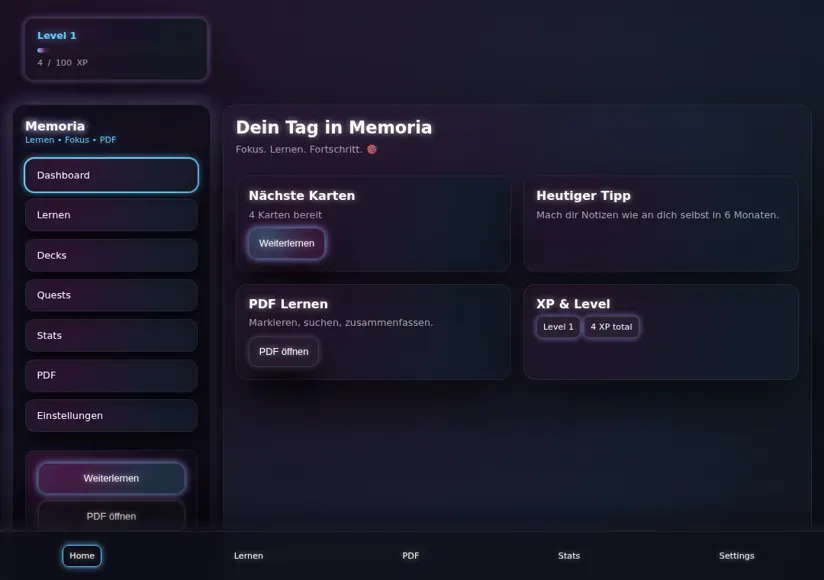
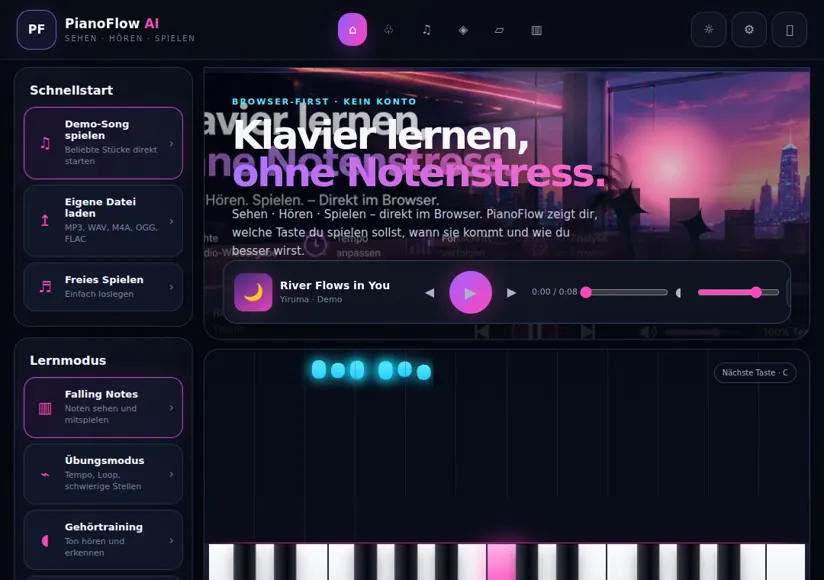
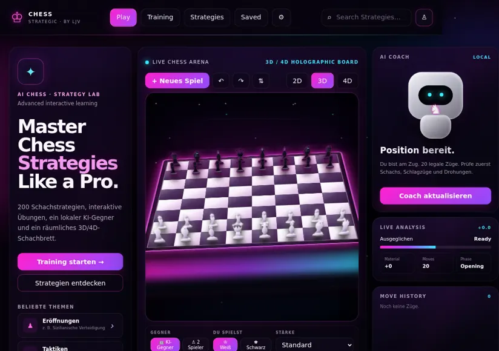
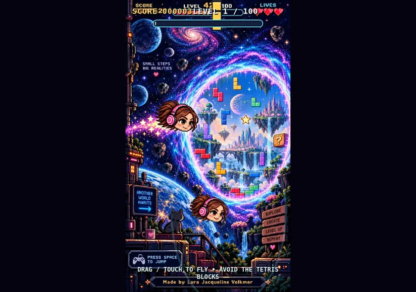
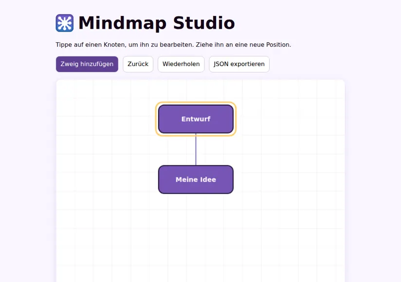
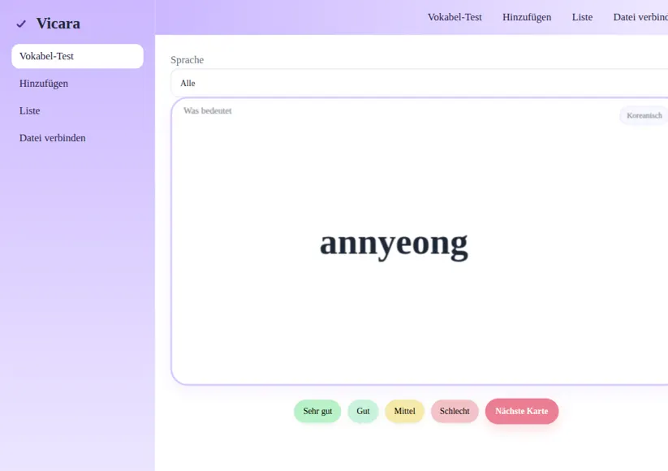
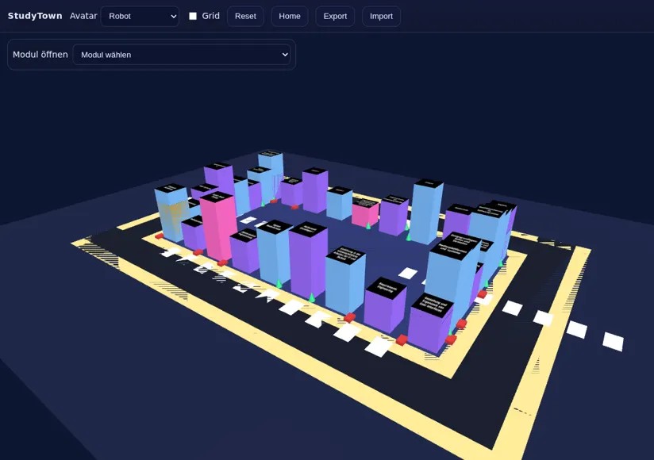
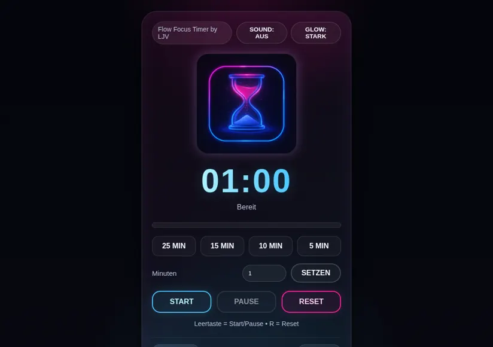

Memoria
Lernkarten in Decks organisieren, Antworten aufdecken und den Lernfortschritt mit XP verfolgen.

Lernkarten in Decks organisieren, Antworten aufdecken und den Lernfortschritt mit XP verfolgen.

Am Touch-Piano spielen und Melodien mit regelbarem Tempo üben.

Schachzüge ausprobieren, Stellungen erkunden und Strategien nachschlagen.

Lara durch das Portal steuern und fallenden Blöcken ausweichen.

Gedanken als verbundene Knoten zeichnen und die Karte lokal weiterschreiben.

Eigene Vokabeln erfassen und mit wendbaren Lernkarten üben.

Module als Gebäude erkunden, Notizen und Checklisten lokal speichern.

Eine Fokuszeit wählen, pausieren und abgeschlossene Sitzungen zählen.